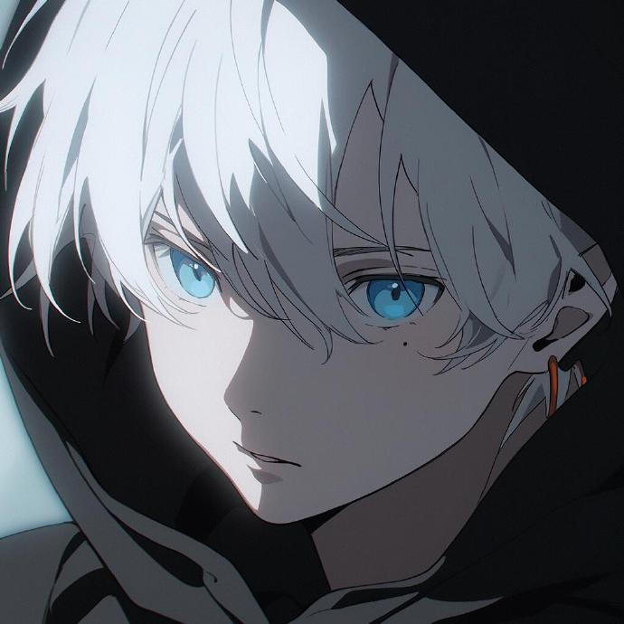

本科就读武夷学院| 电子信息系通信工程专业学生
我是一名热爱技术的大学生，主修计算机科学与技术，对前端开发和数据科学有浓厚的兴趣。在校期间，我不仅注重理论知识的学习，还积极参与实践项目，培养了扎实的编程能力和解决问题的能力。我擅长使用 HTML、CSS、JavaScript 和 Python，并熟悉 React 和 Vue 等前端框架。未来，我希望成为一名全栈开发者，用技术创造更多价值。
短期目标：深入学习前端框架和 Node.js，参与开源项目，提升实战能力。 • 长期目标：成为一名全栈开发者，用技术解决实际问题，推动社会进步。